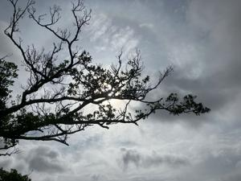
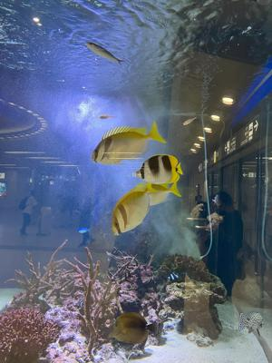

うるがいの話 ある日
最新: 那覇空港は空いていた【うるがいの話 ある日】とは 一日だけのプログです
『うるがいの話』の最新一日だけのプログで、通信料が少なく経済的だ。カニの画像をクリックすると全ての日付が載る『うるがいの話』サイトを表示します
|
|
【うるがいの話】 うるがい(ｳﾙｶﾞｲ urugai)とは、『もずくがに』の名前でとても大きくなります。 |
|---|---|
|
|
【カミマヤーの話】 猫のことを方言でマヤーといいます。カミマヤー（kamimayaa）とは、神の猫のことです。 |
|
【たながぁの音楽】 たながぁ（ﾀﾅｶﾞｰ tanagaa）とは手長えびのことで、何種類かあり大きいのは車 エビぐらいになります。 |

|
【ぶながぁの話】 ぶながぁ(ﾌﾞﾅｶﾞｰ bunagaa)とは、赤い髪の毛、赤い身体、そして身長は１ｍ２０ｃｍ ぐらい、川の蟹を食べているの目撃された。場所は沖縄県国頭郡大宜味村のと ある村僕の隣近所に住んでいる爺さんから、聞いた話です。 |
|
|
【ギーマの話】 ギーマ(giima)とは、山原の里山に咲くスズランに似た、 花を付けます。実は食べられます、 気が付くと口の周りが紫になっています。 |
2024年05月19日 (日）那覇空港は空いていた
17:15

コドモが、内地から戻ってくるため夜、那覇空港にいく。那覇市内の道は混
雑せず、思ったより早く空港についた。駐車場も、空いて簡単に駐車できた
空港内に入ると、先月以前より明らかに人が少なかった。コドモをアパート
へ送って行ったが、道路も比較的空いていた。今日から、梅雨入りかと先週
予報されていたが、いい天気になる。予報もなかなか難しいのだろう、そう
いゆう前提で過ごそう。

『あなた、浮いてますよ！』と私が、座ったまま浮いてふわふわ移動するの
をみて男の人が叫ぶ。ふわふわは、とても気持ちヨカッタ。
夢の中で体が浮いたとき、その浮遊感を楽しめるようなら、吉夢と考えてよ
さそうです。現実の世界で、思いがけないことがきっかけとなって、あなた
の望みがかなったり、目標を達成することができるでしょう。現実の世界に
おいて、あなた自身がウキウキしたり、ワクワクすることを大切にして、そ
の気持ちを指標に行動を起こすと吉です。
空を飛ぶ夢はたまにみるが、フワフワはまれである。
１７時０８分 ビットコインの総資産 ￥３０、２８０（↑１４９）